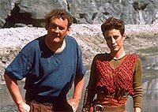
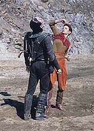
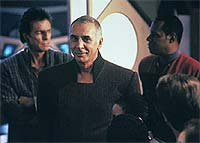
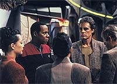

MANCHETE
DO EPISDIO
Trilogia
aberta em grande estilo, com
Kira procurando um heri para Bajor
Episdio
anterior | Prximo
episdio
Sinopse:
Data Estelar:
desconhecida.
Chega ao poder de Quark em Deep Space Nine um brinco
Bajoriano oriundo de Cardssia IV. Quark, na esperana de ganhar
alguma espcie de favor, bate nos aposentos de Kira,
interrompendo sua meditao. Ao ver o brinco Kira pergunta onde
Quark o conseguiu e sai apressadamente.
Kira interrompe uma conversa entre Jake e Ben Sisko sobre o
primeiro encontro de Jake. Aps alguns rodeios pede um explorador
para ir a Cardssia IV resgatar um prisioneiro de guerra
Bajoriano.
Kira mostra o brinco e diz, aps alguns prvios testes, poder
afirmar que o mesmo pertence a Li Nalas, o maior lder da resistncia
Bajoriana. Kira diz que Li supostamente havia morrido em combate,
mas seu corpo nunca foi encontrado. Sua vitria sobre Gul Zarale
em combate homem-a-homem constitui seu maior feito.

Ela
precisa da ajuda de Sisko, pois o Governo Provisrio no
ofereceu nenhuma ajuda a ela, com medo de ir guerra com
Cardassia. Kira diz que Bajor precisa de um lder e que este lder
Li Nalas. Neste momento O'Brien chama, pelo comunicador, Ben e
Odo a um lugar no anel habitacional. Sisko diz a Kira que vai
pensar na situao e vai seo indicada por O'Brien.
Chegando l vislumbra um grafitti do smbolo do "Crculo"
(tambm conhecido como "A aliana para unidade
global"), um grupo radical que acredita em "Bajor para
os Bajorianos". Tal smbolo visto em
toda parte em Bajor mas pela primeira vez visto grafitado em
DS9.
Sisko decide dar o explorador a Kira. Os Cardassianos tambm esto
sujos na histria, pois haviam previamente declarado que haviam
libertado todos os seus prisioneiros de guerra. Acima de tudo, a
presena de Li Nalas poderia trazer estabilidade a Bajor e
permitir que Sisko fizesse seu trabalho com maior facilidade.
Sisko manda O'Brien junto com Kira no explorador. Os dois partem
imediatamente para Cardssia IV.
Os dois conseguem iludir o posto de navegao Cardassiano na
fronteira (com a ajuda de algumas "modificaes"
feitas por O'Brien no explorador). Chegando rbita de Cardssia
IV, eles detectam mais de uma dzia de sinais de vida Bajorianos
em um campo de trabalhos forados. Eles no podem transportar
mais de um par de prisioneiros por vez, ento decidem descer e
tentar o plano B. O acampamento protegido por um campo de fora
Cardassiano padro.
O'Brien finge ser cafeto e Kira finge ser prostituta. Kira diz
ao guarda Cardassiano do permetro que ela tem uma
"entrevista" com o Prefeito do campo. O guarda, na
esperana de marcar tambm uma "entrevista", baixa o
campo de fora e permite que Kira (mas no O'Brien) passe.
Quando o guarda comea a "checar a mercadoria", Kira
aplica sua famosa "Manobra Kira" no guarda, fazendo-o
"dormir", toma o controle e abaixa o campo.
Aps localizar Li, ela descobre que foram os prprios colegas de
campo dele que enviaram o brinco (provavelmente com a ajuda de
algum guarda Cardassiano). Alguns Bajorianos ficam para trs para
permitir a fuga de Li (ferido durante a fuga), Kira, O'Brien e uns
poucos outros prisioneiros.

De
volta a DS9, aps levar os feridos para a enfermaria, Kira vai
informar a Ben Sisko sobre o sucesso da misso. Chegando no
escritrio de Sisko, ela fica to surpresa quanto o comandante
com uma mensagem de Gul Dukat pedindo, formalmente, desculpas ao
povo Bajoriano pela existncia (segundo ele desconhecida pelo
governo Cardassiano) do campo em Cardssia IV e informando que os
demais prisioneiros estavam a caminho de Bajor.
Sisko e Kira se olham atnitos.
Mais tarde, quando Sisko oferece a Li um passeio pelo Promenade,
uma multido comea a se formar em torno deles. Kira vai saudar
a chegada do Ministro Jaro Essa, que diz a Kira que como poltico
deve avis-la de que a operao que libertou Li Nalas poderia
ter causado uma guerra com Cardssia e que mais uma destas e a
carreira militar dela estar terminada. Porm ele diz que como
cidado ter (assim como todo povo Bajoriano) uma eterna dvida
de gratido para com ela.
Chegando ao Promenade, Li fica mais do que feliz de oferecer o
"palanque" para Jaro se dirigir multido.
Finalmente Li levado aos seus aposentos por Sisko. O comandante
diz a ele que muitas pessoas, incluindo ele e Kira, o consideram
uma real esperana de unificar Bajor em torno de uma meta comum.
Ao mesmo tempo, Quark atacado por trs figuras mascaradas em
seu bar, que o amordaam e colocam uma marca (em brasa) do
"Crculo" em sua testa. Kira explica a Li que devido ao
pulso fraco do governo provisrio muitos esperam de organizaes
como o "Crculo" a estabilidade necessria para dar a
Bajor um futuro prspero.
Porm, antes que Sisko possa se deitar, ele recebe a chamada do
primeiro-oficial de um cargueiro Tygariano (atracado em DS9)
informando que Li Nalas estava tentando se esconder entre a carga
e partir com o cargueiro sem ser notado.
No escritrio de Sisko, Li conta a histria que originou a lenda
em torno do seu nome. Fugindo de uma emboscada, nos tempos da
resistncia, ele caiu de um barranco em um lago onde se banhava
um Cardassiano. S quando este ameaou pegar sua arma entre suas
roupas, Li lembrou-se que estava armado e atirou. O resto dos
Bajorianos chegaram e, vendo a situao e reconhecendo o
Cardassiano como um criminoso de guerra chamado Gul Zarale, concluram
que Li matara o Cardassiano em algum tipo de combate herico. Da
a histria passou de boca em boca, cada vez mais exagerada, e at
mesmo nasceu uma absurda noo de que todas as grandes vitrias
de Bajor durante o tempo da resistncia tiveram um
"dedo" de Li.
"E tudo que eu fiz foi atirar em um Cardassiano desarmado, s
de roupa de baixo. Eu nunca vou esquecer a sua face quando morreu.
Ele estava to... embaraado."
[Li Nalas]
"Mas Bajor no necessita de um homem, ele precisa de um smbolo,
e isto que voc ."
[Ben Sisko]
"Mas tudo baseado em uma mentira."
[Li Nalas]
"No. baseado em uma lenda. E lendas so to poderosas
quanto qualquer verdade. Bajor ainda precisa desta lenda. Bajor
precisa de voc."
[Ben Sisko]

Alguns
dias mais tarde, Li e Jaro retornam de uma viagem a Bajor. Jaro
comunica que Li recebeu o ttulo de Navarch da assemblia e foi
designado como oficial de ligao Bajoriano em DS9. Kira foi
relocada para Bajor. Kira e Sisko se olham incrdulos.
Continua...
Comentrios:
O modo de vida Bajoriano est a beira de um colapso, sendo esta
uma situao decorrente de fatores claramente estabelecidos
anteriormente durante o curso da srie. A fragilidade do Governo
Provisrio referida desde o piloto da srie (o excelente "Emissary")
e o vcuo de liderana religiosa foi estabelecido com o
desaparecimento de Kai Opaka (no muito bom episdio "Battle
Lines").
Tal fragilidade governamental fecundo terreno para a erupo
de guerras civis, o planejamento de golpes de Estado e o
estabelecimento de grupos radicais subversivos. Tambm no
incomum a opinio pblica comear a tomar posio e
simpatizar com tais insurreies.
O aspecto religioso j havia sido estabelecido no ltimo episdio
da temporada passada (o excelente "In
The Hands Of The Prophets"), focando conflitos ideolgicos
e fanatismo religioso.
Devido a este estado catico, no difcil aceitar que Kira
tomasse a deciso de embarcar em uma misso suicida para
resgatar um legendrio heri na certeza de que este traria equilbrio
ao planeta Bajor. Tambm faz todo sentido que Sisko a ajude
enquanto o Governo Provisrio no. Porm faz ainda mais sentido
que este mesmo Governo Provisrio aparecesse aps a fuga
concretizada, na figura do ministro Jaro, para capitalizar sobre o
ocorrido.
O dilogo entre Sisko e Li j quase ao final do episdio, sobre
a origem das lendas, outro tema recorrente da srie.
Elementos de trama bastante realistas --como a obteno do
brinco pelas mos de Quark em primeiro lugar, a fuga de Cardssia
IV (com direito a plano B, escudo humano de outros prisioneiros e
Kira deixando a maioria possivelmente para a morte), o enigmtico
controle de danos poltico Cardassiano por parte de Gul Dukat e o
ataque a Quark-- do a impresso de que os personagens esto
realmente envolvidos em eventos alm do seu controle e de
forma consistente com circunstncias e temas j estabelecidos,
sem dvida caractersticas de uma grande histria em
desenvolvimento.

A
direo de Kolbe magistral, utilizando um andamento similar
ao de filmes para cinema, com uma fotografia super bem cuidada. So
destaques em especial a cena em que introduzida, de forma
sensual, a capito de cargueiro que d o brinco a Quark no incio
do episdio, a cena de orao de Kira, toda a seqncia
(antolgica) da fuga de Cardssia IV e a cena do ataque a Quark
(violenta ao extremo, de inegvel valor artstico e faz prxima,
real e cristalina a ameaa que o "Crculo"
representa).
Beymer e Langella esto formidveis em seus papis, bem como
todo o elenco regular, em especial Nana Visitor.
Perguntas interessantes que ficam e que sero respondidas ao
longo da Trilogia: quem so os candidatos sucesso de Kai
Opaka? Quem est por trs do "Crculo"? Que papel os
Cardassianos representam nesta histria toda? Existe algum motivo
especial para a transferncia de Li Nalas para o posto de
primeiro-oficial de DS9 e a de Kira para Bajor?
A cena inicial com Odo, Quark e Rom e a cena entre Quark e Rom
pouco antes do ataque a Quark caem na categoria do neutro ou
indiferente, destoando um pouco do resto do episdio.
sempre um motivo de trepidao pessoal ver O'Brien (casado e
com uma filha) ser voluntrio para uma misso suicida, mas j
me acostumei com isto.
A tentativa de fuga de Li Nalas no cargueiro Tygariano no me
parece muito certa, me parece apenas uma maneira artificial de
conduzir a cena seguinte (o ponto alto do episdio), em que
finalmente Li conta a real histria de sua vida a Sisko.
"The Homecoming" um "Setup pico"
para ningum botar defeito, com direito a excelentes caracterizaes
e dilogo super afiado.
Citaes
Quark - "Every once in a while,
declare peace. It confuses the hell out of your enemies."
("De vez em quando,
declare paz. Confunde pra danar os seus inimigos.")
Trivia:
Participao de Richard Beymer como Li Nalas. Richard Beymer
(20/02/1938, natural de Avoca, Iowa, nos EUA, algumas vezes
creditado como Dick Beymer) participou da srie "Twin
Peaks" e de filmes como "West Side Story", de 1961,
e "The Diary of Anne Frank", de 1959.
Participao (no-creditada) de Frank
Langella como Ministro Jaro Essa. Frank Langella (01/01/1940,
natural de Bayonne, New Jersey, nos EUA) recebeu um Tony (o Oscar
do Teatro) por sua participao em "Seascape", de
1975, estrelando pouco tempo depois o papel-ttulo do filme
"Dracula", de 1979. Pode tambm ser visto no filme
"Masters of The Universe" (junto com Robert Duncan
Mcneill, o Tom Paris de Voyager) no papel de
"Esqueleto". Mais recentemente pode ser visto com Jeremy
Irons na refilmagem "Lolita", de 1997, e tambm em
"The Ninth Gate", de 1999, entre muitos outros.
Atualmente vive com a atriz Whoopi Goldberg, a Guinan da Nova
Gerao. Ele no participou do episdio por dinheiro ou
exposio mas sim porque os seus filhos adoram a srie.
Os trs primeiros episdios, "The
Homecoming", "The Circle" e "The
Siege", que abrem a segunda temporada de DS9, constituem
a primeira real trilogia da histria de Jornada nas Estrelas.
Ela conhecida entre os fs como "Trilogia do Crculo"
ou "Trilogia de Li Nalas".
A idia da trilogia partiu de uma antiga histria
de Jeri Taylor, na poca tocando a equipe de roteiristas de A
Nova Gerao. Foi Ira Behr quem modificou a noo original
da histria, de que Li Nalas seria um heri relutante,
transformando-o em um heri por engano.
As cenas do campo de trabalhos forados
Cardassiano em Cardssia IV foram filmadas em "Canyon
Soledad" ao norte de Los Angeles. As condies de tal locao
foram consideradas torturantes por todos os envolvidos, um
verdadeiro INFERNO SOBRE A TERRA! Durante a srie outras episdios
teriam filmagens ali como "The Ship", "Rocks
and Shoals", entre outros.
Pela primeira vez foi citado o drink
"Black Hole", uma das bebidas favoritas dos clientes do
bar do Quark.
Presena de Rom e Dukat.
Ficha
tcnica:
Histria de Jery Taylor e Ira
Steven Behr
Roteiro de Ira Steven Behr
Direo de Winrich Kolbe
Exibido em 27/09/1993
Produo: 021
Elenco:
Avery Brooks como
Benjamin Lafayette Sisko
Ren Auberjonois como Odo
Nana Visitor como Kira Nerys
Colm Meaney como Miles Edward O'Brien
Siddig El Fadil como Julian Subatoi Bashir
Armin Shimerman como Quark
Terry Farrell como Jadzia Dax
Cirroc Lofton como Jake Sisko
Elenco convidado:
Richard Beymer como Li Nalas
Frank Langella como ministro Jaro Essa [no-creditado]
Max Grodnchik como Rom
Michael Bell como Borum
Marc Alaimo como Gul Dukat
Leslie Bevis como a Capito do cargueiro
Paul Nakauchi como o primeiro-oficial Tygariano